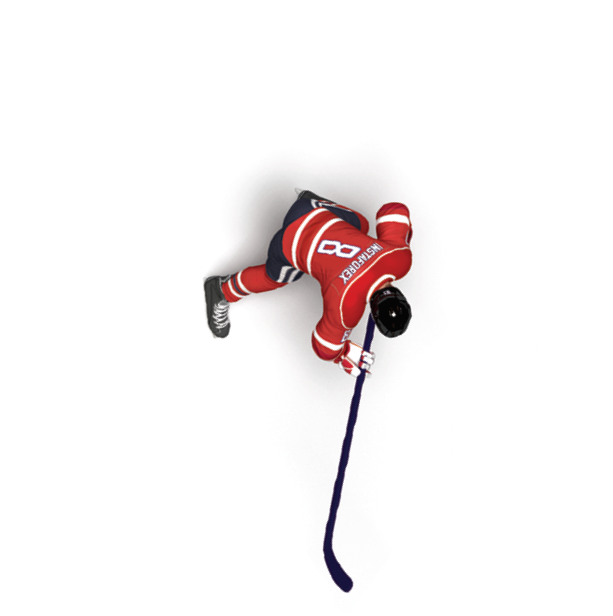

Неважно, упал курс или выросНа FOREX у Вас есть возможность зарабатывать на любом его движении
Высокая инфляция, рост цен на продукты, политическая нестабильность и снижение курса национальной валюты ведут к тому, что изо дня в день накопления обесцениваются.
Однако, вы можете не потерять, а, напротив приумножить средства, если будите грамотно распоряжаться своими деньгами.
Валюты на Форекс торгуются парами. Например, котировки по EUR/USD показывают отношение евро к доллару. И если одна валюта начинает терять позиции - то вторая укрепляется.
Падение американских фондовых рынков, связанное с глобальным бегством от рисков в долговые обязательства Соединённых Штатов, спровоцировал крупнейший за 119 лет обвал Dow Jones, демонстрируя снижение индекса свыше 1000 пунктов.Совершив торговую операцию на продажу в начале падения индекса, вы могли бы на данный момент заработать с умеренным риском более $1500, имея на депозите всего $1000.Заработок при агрессивной торговле составил бы более $6000.
22 октября
Глава ЕЦБ Марио Драги на очередной осенней пресс-конференции заявил о возможности расширения программы стимулирования экономики на одной из будущих встреч, что спровоцировала на рынке резкие колебания.Трейдеры моментально отреагировали на слова Драги, скупая доллары по отношению евро, демонстрируя снижение котировки свыше 300 пунктов.Совершив торговую операцию на продажу в начале падения курса, вы могли бы заработать с умеренным риском более $600, имея на депозите всего $1000.Заработок при агрессивной торговле составил бы более $2500.
28 октября 2015
По итогам очередного осеннего заседания, федрезерв принял решение сохранить процентную ставку на прежнем уровне (0,0% - 0,25%), но в тексте заявления, ФРС убрал фразу про влияние глобальных проблем на рост США и инфляцию, дав надежду спекулянтам, возможность скорейшего повышение ставки уже в декабре. Данная новость моментально отыграла на рынке резким падением евро по отношении доллара на 170 пунктов.Совершив торговую операцию на продажу в начале падения курса, вы могли бы заработать с умеренным риском более $400, имея на депозите всего $1000.Заработок при агрессивной торговле составил бы более $1500.
19 августа 2015 года
Завершение финансового года в США всегда сопровождается локальным снижением биржевых индексов в конце августа. Это приводит к массовым распродажам долларовых позиций, и привело к репатриации йены, в результате чего доллар стал стремительно терять свои позиции против йены. За четыре дня потерял 600 пунктов.Совершив торговую операцию на продажу в начале падения курса, вы могли бы заработать с умеренным риском более $1020, имея на депозите всего $1000.Заработок при агрессивной торговле составил бы более $4080.
15 октября 2015 года
Рынки ожидали ясности с планами ФРС по монетарной политике, в частности конкретных сроков начала повышения ставки рефинансирования. Незадолго до заседания ФРС трейдеры начали закрывать высокорисковые позиции, что обернулось снижением цены на золото. После того, как ФРС объявил о планах повысить ставку в декабре, а так же стремлении повысить ее еще четыре раза в 2016 году, падение золота только ускорилось. В течении полутора месяцев золото непрерывно дешевело, и общее снижение составило 13 000 пунктов.Совершив торговую операцию на продажу в начале падения стоимости золота, вы могли бы заработать с умеренным риском более $2600, имея на депозите всего $1000.Заработок при агрессивной торговле составил бы более $10400.
Почему ИнстаФорекс?
ИнстаФорекс - это надежный брокер, работающий на рынке с 2007 года
Более 2 000 000 клиентов
1000 счетов регистрируются ежедневно
300 торговых инструментов
Обслуживание клиентов обеспечивают 9 торговых серверов
260 представительств по всему миру
Ежегодный призовой фонд $500000
32 финансовые награды

Рынок Форекс - место больших возможностейКачественное обучение, анализ, наличие торговой стратегии и надежного партнера-брокера - ключевые составляющие хорошего заработка!
Регистрация торгового счета на Форекс
После регистрации на указанную почту будет выслана следующая информация:
номер торгового счета (логин) и пароль для доступа в личный кабинет и совершения торговых операция через торговый терминал;
телефонный пароль (кодовое слово) - для звонков в службу технической поддержки и диллерский отдел;
PIN-код - для подтверждения заявок на снятие с вашего торгового счета.